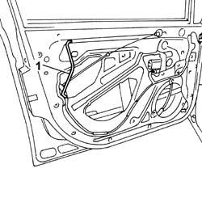

7005C43 link connecting front side door barrels/catch - r+r
- Path
- Procedures > 70 FITTINGS > 7005 PASSENGER COMPARTMENT FRONT SIDE DOORS > 7005C front lock controls > 7005C43 link connecting front side door barrels/catch - r+r
- Kind
- repair procedure (removal / refitting; the operation number is the code)
- Applies to
- all engines; all production periods
- Interactive page
- https://sloeber94.github.io/elrnDB-fPnd/en/#/2753045
Applies to: all engines; all production periods
 Removing
Removing
 Refitting
RefittingBefore carrying out the operations described below, make sure that the window is fully raised.
Disconnect the battery negative terminal.
7005E12 corner cover of one front side door, lh or rh r r
7005C44 interior handle panel - r r
For versions with manually-operated windows carry out the operation:
7005D38 front side door manual window mechanism handle ring-nut - r r
7005E08 front side door interior panel r r
5570T91 Front SIDE LOUDSPEAKER. (one), left or right - R.R. with door panel removed
7005A05 front side door water guard protection r r or arrange
7005E91 One front door ANTI-BREAK IN PARTITION, left or right - R.R. with door panel removed
1. Disconnect the link and remove it.

Applies to: all engines; all production periods
Refitting
RemovingConnect the link.
7005E91 One front door ANTI-BREAK IN PARTITION, left or right - R.R. with door panel removed
7005A05 front side door water guard protection r r or arrange
5570T91 Front SIDE LOUDSPEAKER. (one), left or right - R.R. with door panel removed
7005E08 front side door interior panel r r
For versions with manaully-operated windows carry out the operation:
7005D38 front side door manual window mechanism handle ring-nut - r r
7005C44 interior handle panel - r r
7005E12 corner cover of one front side door, lh or rh r r
Connect the battery negative terminal.
Topics linked from this page (7)
- 5570T91 Front SIDE LOUDSPEAKER. (one), left or right - R.R. with door panel removed
- 7005A05 front side door water guard protection r r or arrange
- 7005C44 interior handle panel - r r
- 7005D38 front side door manual window mechanism handle ring-nut - r r
- 7005E08 front side door interior panel r r
- 7005E12 corner cover of one front side door, lh or rh r r
- 7005E91 One front door ANTI-BREAK IN PARTITION, left or right - R.R. with door panel removed